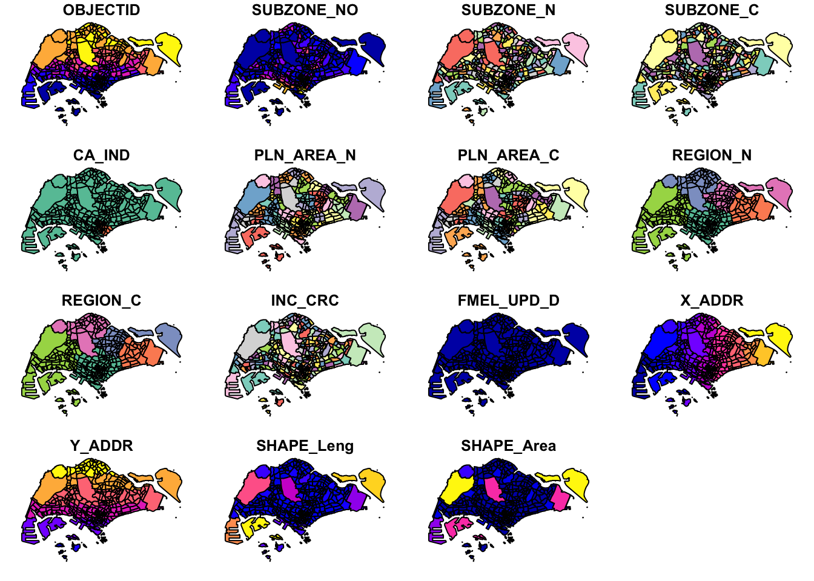

pacman::p_load(sf, tidyverse)Geospatial Data Wrangling with R
1.1 Overview
Learning Objectives:
- Introduction to
sfpackage and functions that support geospatial data. - Understand geospatial file formats and coordinate reference systems.
- Create a simple feature (sf) dataframe.
- Perform geoprocessing tasks.
- Perform exploratory data analysis.
1.2 Load packages
Tidyverse contains and installs a number of packages commonly used in data analysis, such as ggplot2 to create declarative graphics, dplyr to manipulate data, tidyr to organize data in a consistent form, readr to parse rectangular data, and other packages. More information can be found here.
sf provides a set of tools and a standardized way to encode geospatial vectors in the form of points, lines, polygons, etc. It binds to GDAL to read and write data, GEOS for geometrical operations, and PROJ for projection conversions and datum transformations. More information can be found here.
1.3 Import data
Before we begin, let’s understand the geospatial file formats. KML, SHP, and GeoJSON are file formats commonly used in Geographic Information System (GIS) and mapping applications to represent and store geospatial data. Each format serves a specific purpose and has its own characteristics.
Keyhole Markup Language is an XML-based file format developed for use with Google Earth. It is widely supported by various GIS and mapping software. KML files can contain a variety of geospatial data, including points, lines, polygons, images, and text annotations.
Shapefile is a widely used industry-standard geospatial vector data format used by GIS softwares, such as ESRI ArcGIS and QGIS. Shapefiles consist of multiple files with different extensions (.shp, .shx, .dbf, etc.) that together represent vector features, including points, lines, and polygons. Shapefiles are versatile and support for attribute data, making them suitable for a wide range of GIS applications.
Geographic JavaScript Object Notation is an open and lightweight format for encoding geospatial data in a JSON (JavaScript Object Notation) format. It is easy for both humans and machines to read and write. GeoJSON supports various types of geospatial features, including points, lines, polygons, and multi-geometry collections. It is commonly used in web mapping applications and can be easily integrated with JavaScript and other programming languages. GeoJSON is a format for encoding a variety of geographic data structures.
Next, we have three geospatial and one aspatial datasets in various data file formats.
Master Plan 2014 Subzone Boundary (mpsz)
mpsz is is a geospatial dataset of the Master Plan 2019, a forward looking guiding plan for Singapore’s development in the medium term over the next 10 to 15 years published in 2019. Note this mpsz differs from that in previous chapter, Data Wrangling.
The output indicates that the geospatial objects are multipolygon features. There are 332 features and 6 fields. It is in WGS84 projected coordinates system with XY dimension.
Source: URA (Download here)

mpsz = st_read(dsn="data/geospatial", layer="MP14_SUBZONE_WEB_PL")Reading layer `MP14_SUBZONE_WEB_PL' from data source
`/Users/chockwankee/Documents/chockwk/ISSS624_Geospatial_Analytics/Hands_on_Ex/Hands_on_Ex01/data/geospatial'
using driver `ESRI Shapefile'
Simple feature collection with 323 features and 15 fields
Geometry type: MULTIPOLYGON
Dimension: XY
Bounding box: xmin: 2667.538 ymin: 15748.72 xmax: 56396.44 ymax: 50256.33
Projected CRS: SVY21Pre-schools Location (preschool)
preschool is a geospatial dataset containing the location of pre-schools, including childcare centres and kindergartens, in Singapore.
The output indicates that the geospatial objects are point features. There are 2290 features and 2 fields. It is in WGS84 projected coordinates system with XYZ dimension.
Source: ECDA (Download here)

preschool = st_read("data/geospatial/PreSchoolsLocation.kml")Reading layer `PRESCHOOLS_LOCATION' from data source
`/Users/chockwankee/Documents/chockwk/ISSS624_Geospatial_Analytics/Hands_on_Ex/Hands_on_Ex01/data/geospatial/PreSchoolsLocation.kml'
using driver `KML'
Simple feature collection with 2290 features and 2 fields
Geometry type: POINT
Dimension: XYZ
Bounding box: xmin: 103.6878 ymin: 1.247759 xmax: 103.9897 ymax: 1.462134
z_range: zmin: 0 zmax: 0
Geodetic CRS: WGS 84Cycling Path (cyclingpath)
cyclingpath is a geospatial dataset which contains an intra-town path designated for cyclists represented by line. Note the data excludes park connectors.
The output indicates that the geospatial objects are multilinestring features. There are 2558 features and 2 fields. It is in SVY21 projected coordinates system with XY dimension.
Source: LTA (Download here)

cyclingpath = st_read(dsn="data/geospatial", layer="CyclingPathGazette")Reading layer `CyclingPathGazette' from data source
`/Users/chockwankee/Documents/chockwk/ISSS624_Geospatial_Analytics/Hands_on_Ex/Hands_on_Ex01/data/geospatial'
using driver `ESRI Shapefile'
Simple feature collection with 2558 features and 2 fields
Geometry type: MULTILINESTRING
Dimension: XY
Bounding box: xmin: 11854.32 ymin: 28347.98 xmax: 42626.09 ymax: 48948.15
Projected CRS: SVY21Inside Airbnb Singapore (airbnb)
Inside Airbnb is a mission driven project that provides data and advocacy about Airbnb’s impact on residential communities. The data utilizes public information compiled from the Airbnb web-site including the availabiity calendar for 365 days in the future, and the reviews for each listing. Data is verified, cleansed, analyzed and aggregated. Note the data is not associated with or endorsed by Airbnb.
It is an aspatial dataset and the output indicates 3483 features and 18 fields.
Inside Airbnb uses an occupancy model, the San Francisco Model, in honor of the public policy and urban planners working for that fair city who created occupancy models to quantify the impact of Airbnb on housing.
Source: Inside Airbnb (Download here)

airbnb = read_csv("data/aspatial/listings.csv")
list(airbnb)[[1]]
# A tibble: 3,483 × 18
id name host_id host_name neighbourhood_group neighbourhood latitude
<dbl> <chr> <dbl> <chr> <chr> <chr> <dbl>
1 71609 Villa in… 367042 Belinda East Region Tampines 1.35
2 71896 Home in … 367042 Belinda East Region Tampines 1.35
3 71903 Home in … 367042 Belinda East Region Tampines 1.35
4 275343 Rental u… 1439258 Kay Central Region Bukit Merah 1.29
5 275344 Rental u… 1439258 Kay Central Region Bukit Merah 1.29
6 289234 Home in … 367042 Belinda East Region Tampines 1.34
7 294281 Rental u… 1521514 Elizabeth Central Region Newton 1.31
8 324945 Rental u… 1439258 Kay Central Region Bukit Merah 1.29
9 330095 Rental u… 1439258 Kay Central Region Bukit Merah 1.29
10 369141 Place to… 1521514 Elizabeth Central Region Newton 1.31
# ℹ 3,473 more rows
# ℹ 11 more variables: longitude <dbl>, room_type <chr>, price <dbl>,
# minimum_nights <dbl>, number_of_reviews <dbl>, last_review <date>,
# reviews_per_month <dbl>, calculated_host_listings_count <dbl>,
# availability_365 <dbl>, number_of_reviews_ltm <dbl>, license <chr>1.4 Explore data
1.4.1 st_geometry()
st_geometry() st_set_geometry() st_drop_geometry() can get, set, replace or rename geometry from an sf object. For this exercise, we will use st_geometry() to display basic information of the feature class, such as type of geometry, the geographic extent of the features and the coordinate system of the data.
mpsz contains a column geometry where it indicates the object is a multipolygon in XY dimension.
st_geometry(mpsz)Geometry set for 323 features
Geometry type: MULTIPOLYGON
Dimension: XY
Bounding box: xmin: 2667.538 ymin: 15748.72 xmax: 56396.44 ymax: 50256.33
Projected CRS: SVY21
First 5 geometries:A multipolygon represent areas (polygons), typically complex ones with areas/holes inside, or consisting of multiple disjoint parts. Here is an example of a multipolygon and an object within the column geometry where its relations are represented as ((X1,Y1), (X2,Y2),..).

mpsz[[16]][[1]]preschool contains a column geometry where it indicates the object is a point z in XYZ dimension. The statistics reveal zmin and zmax as zero and the observation is confirmed by a visual check of the data.
st_geometry(preschool)Geometry set for 2290 features
Geometry type: POINT
Dimension: XYZ
Bounding box: xmin: 103.6878 ymin: 1.247759 xmax: 103.9897 ymax: 1.462134
z_range: zmin: 0 zmax: 0
Geodetic CRS: WGS 84
First 5 geometries:cyclingpath contains a column geometry where it indicates the object is a multilinestring in XY dimension.
st_geometry(cyclingpath)Geometry set for 2558 features
Geometry type: MULTILINESTRING
Dimension: XY
Bounding box: xmin: 11854.32 ymin: 28347.98 xmax: 42626.09 ymax: 48948.15
Projected CRS: SVY21
First 5 geometries:A multilinestring represent one ground feature made of one or multiple line strings. Here is an example of multilinestring and two objects where they consist of 2 and 5 lines and are represented as ((X1 Y1, X2 Y2, …)) within the column geometry.

cyclingpath[[3]][[1]]
cyclingpath[[3]][[46]]1.4.2 glimpse()
glimpse() transposes the columns in a dataset and makes it possible to see the column name, data type and values in every column in a data frame.
glimpse(mpsz)Rows: 323
Columns: 16
$ OBJECTID <int> 1, 2, 3, 4, 5, 6, 7, 8, 9, 10, 11, 12, 13, 14, 15, 16, 17, …
$ SUBZONE_NO <int> 1, 1, 3, 8, 3, 7, 9, 2, 13, 7, 12, 6, 1, 5, 1, 1, 3, 2, 2, …
$ SUBZONE_N <chr> "MARINA SOUTH", "PEARL'S HILL", "BOAT QUAY", "HENDERSON HIL…
$ SUBZONE_C <chr> "MSSZ01", "OTSZ01", "SRSZ03", "BMSZ08", "BMSZ03", "BMSZ07",…
$ CA_IND <chr> "Y", "Y", "Y", "N", "N", "N", "N", "Y", "N", "N", "N", "N",…
$ PLN_AREA_N <chr> "MARINA SOUTH", "OUTRAM", "SINGAPORE RIVER", "BUKIT MERAH",…
$ PLN_AREA_C <chr> "MS", "OT", "SR", "BM", "BM", "BM", "BM", "SR", "QT", "QT",…
$ REGION_N <chr> "CENTRAL REGION", "CENTRAL REGION", "CENTRAL REGION", "CENT…
$ REGION_C <chr> "CR", "CR", "CR", "CR", "CR", "CR", "CR", "CR", "CR", "CR",…
$ INC_CRC <chr> "5ED7EB253F99252E", "8C7149B9EB32EEFC", "C35FEFF02B13E0E5",…
$ FMEL_UPD_D <date> 2014-12-05, 2014-12-05, 2014-12-05, 2014-12-05, 2014-12-05…
$ X_ADDR <dbl> 31595.84, 28679.06, 29654.96, 26782.83, 26201.96, 25358.82,…
$ Y_ADDR <dbl> 29220.19, 29782.05, 29974.66, 29933.77, 30005.70, 29991.38,…
$ SHAPE_Leng <dbl> 5267.381, 3506.107, 1740.926, 3313.625, 2825.594, 4428.913,…
$ SHAPE_Area <dbl> 1630379.27, 559816.25, 160807.50, 595428.89, 387429.44, 103…
$ geometry <MULTIPOLYGON [m]> MULTIPOLYGON (((31495.56 30..., MULTIPOLYGON (…glimpse(preschool)Rows: 2,290
Columns: 3
$ Name <chr> "kml_1", "kml_2", "kml_3", "kml_4", "kml_5", "kml_6", "kml…
$ Description <chr> "<center><table><tr><th colspan='2' align='center'><em>Att…
$ geometry <POINT [°]> POINT Z (103.8072 1.299333 0), POINT Z (103.826 1.31…glimpse(cyclingpath)Rows: 2,558
Columns: 3
$ PLANNING_A <chr> NA, NA, NA, NA, NA, NA, NA, NA, NA, NA, NA, NA, NA, NA, NA,…
$ PLANNING_1 <chr> "BEDOK", "BEDOK", "BEDOK", "TAMPINES", "TAMPINES", "TAMPINE…
$ geometry <MULTILINESTRING [m]> MULTILINESTRING ((39782.85 ..., MULTILINEST…1.4.3 head()
head() returns the first defined n rows of a vector, matrix, table, data frame or function. tail() is the reversed function.
head(mpsz, n=5)Simple feature collection with 5 features and 15 fields
Geometry type: MULTIPOLYGON
Dimension: XY
Bounding box: xmin: 25867.68 ymin: 28369.47 xmax: 32362.39 ymax: 30435.54
Projected CRS: SVY21
OBJECTID SUBZONE_NO SUBZONE_N SUBZONE_C CA_IND PLN_AREA_N
1 1 1 MARINA SOUTH MSSZ01 Y MARINA SOUTH
2 2 1 PEARL'S HILL OTSZ01 Y OUTRAM
3 3 3 BOAT QUAY SRSZ03 Y SINGAPORE RIVER
4 4 8 HENDERSON HILL BMSZ08 N BUKIT MERAH
5 5 3 REDHILL BMSZ03 N BUKIT MERAH
PLN_AREA_C REGION_N REGION_C INC_CRC FMEL_UPD_D X_ADDR
1 MS CENTRAL REGION CR 5ED7EB253F99252E 2014-12-05 31595.84
2 OT CENTRAL REGION CR 8C7149B9EB32EEFC 2014-12-05 28679.06
3 SR CENTRAL REGION CR C35FEFF02B13E0E5 2014-12-05 29654.96
4 BM CENTRAL REGION CR 3775D82C5DDBEFBD 2014-12-05 26782.83
5 BM CENTRAL REGION CR 85D9ABEF0A40678F 2014-12-05 26201.96
Y_ADDR SHAPE_Leng SHAPE_Area geometry
1 29220.19 5267.381 1630379.3 MULTIPOLYGON (((31495.56 30...
2 29782.05 3506.107 559816.2 MULTIPOLYGON (((29092.28 30...
3 29974.66 1740.926 160807.5 MULTIPOLYGON (((29932.33 29...
4 29933.77 3313.625 595428.9 MULTIPOLYGON (((27131.28 30...
5 30005.70 2825.594 387429.4 MULTIPOLYGON (((26451.03 30...head(preschool, n=5)Simple feature collection with 5 features and 2 fields
Geometry type: POINT
Dimension: XYZ
Bounding box: xmin: 103.8048 ymin: 1.299333 xmax: 103.8409 ymax: 1.435024
z_range: zmin: 0 zmax: 0
Geodetic CRS: WGS 84
Name
1 kml_1
2 kml_2
3 kml_3
4 kml_4
5 kml_5
Description
1 <center><table><tr><th colspan='2' align='center'><em>Attributes</em></th></tr><tr bgcolor="#E3E3F3"> <th>CENTRE_NAME</th> <td>CHILDREN'S COVE PRESCHOOL PTE.LTD.</td> </tr><tr bgcolor=""> <th>CENTRE_CODE</th> <td>PT9390</td> </tr><tr bgcolor="#E3E3F3"> <th>INC_CRC</th> <td>498CC9FE48CC94D4</td> </tr><tr bgcolor=""> <th>FMEL_UPD_D</th> <td>20211201093631</td> </tr></table></center>
2 <center><table><tr><th colspan='2' align='center'><em>Attributes</em></th></tr><tr bgcolor="#E3E3F3"> <th>CENTRE_NAME</th> <td>CHILDREN'S COVE PTE. LTD.</td> </tr><tr bgcolor=""> <th>CENTRE_CODE</th> <td>PT8675</td> </tr><tr bgcolor="#E3E3F3"> <th>INC_CRC</th> <td>22877550804213FD</td> </tr><tr bgcolor=""> <th>FMEL_UPD_D</th> <td>20211201093631</td> </tr></table></center>
3 <center><table><tr><th colspan='2' align='center'><em>Attributes</em></th></tr><tr bgcolor="#E3E3F3"> <th>CENTRE_NAME</th> <td>CHILDREN'S VINEYARD PRESCHOOL PTE. LTD</td> </tr><tr bgcolor=""> <th>CENTRE_CODE</th> <td>PT9308</td> </tr><tr bgcolor="#E3E3F3"> <th>INC_CRC</th> <td>B2FE90E44AD494E3</td> </tr><tr bgcolor=""> <th>FMEL_UPD_D</th> <td>20211201093631</td> </tr></table></center>
4 <center><table><tr><th colspan='2' align='center'><em>Attributes</em></th></tr><tr bgcolor="#E3E3F3"> <th>CENTRE_NAME</th> <td>CHILDTIME CARE & DEVELOPMENT CENTRE PTE.LTD.</td> </tr><tr bgcolor=""> <th>CENTRE_CODE</th> <td>PT9122</td> </tr><tr bgcolor="#E3E3F3"> <th>INC_CRC</th> <td>1384CDC0D14B76A1</td> </tr><tr bgcolor=""> <th>FMEL_UPD_D</th> <td>20211201093631</td> </tr></table></center>
5 <center><table><tr><th colspan='2' align='center'><em>Attributes</em></th></tr><tr bgcolor="#E3E3F3"> <th>CENTRE_NAME</th> <td>CHILTERN HOUSE</td> </tr><tr bgcolor=""> <th>CENTRE_CODE</th> <td>PT2070</td> </tr><tr bgcolor="#E3E3F3"> <th>INC_CRC</th> <td>FB24EAA6E73B2723</td> </tr><tr bgcolor=""> <th>FMEL_UPD_D</th> <td>20211201093631</td> </tr></table></center>
geometry
1 POINT Z (103.8072 1.299333 0)
2 POINT Z (103.826 1.312839 0)
3 POINT Z (103.8409 1.348843 0)
4 POINT Z (103.8048 1.435024 0)
5 POINT Z (103.839 1.33315 0)head(cyclingpath, n=5)Simple feature collection with 5 features and 2 fields
Geometry type: MULTILINESTRING
Dimension: XY
Bounding box: xmin: 39598.41 ymin: 34811.14 xmax: 40031.89 ymax: 37075.99
Projected CRS: SVY21
PLANNING_A PLANNING_1 geometry
1 <NA> BEDOK MULTILINESTRING ((39782.85 ...
2 <NA> BEDOK MULTILINESTRING ((39931.51 ...
3 <NA> BEDOK MULTILINESTRING ((40031.89 ...
4 <NA> TAMPINES MULTILINESTRING ((39958.38 ...
5 <NA> TAMPINES MULTILINESTRING ((39652.87 ...1.5 Plot geospatial data
1.5.1 plot()
plot() takes parameters for specifying points in the diagram. At its simplest, it can plot two numbers against each other. With datasets, it can generate maps and plot the specified columns/attributes, with default up to nine plots or maximum all plots.
mpsz contains 15 attributes and we will generate a map for each of the attributes as shown below. Note: The column geometry is not considered as an attribute for mpsz, similar for the subsequent datasets.
plot(mpsz, max.plot = 15)
We can plot the geometry map of mpsz through plot() and st_geometry().
plot(st_geometry(mpsz))
We can select a specific attribute of mpsz and generate its map accordingly.
plot(mpsz["PLN_AREA_N"])
preschool has two attributes and plot() generates two maps with points based on object name and center details.
plot(preschool)Based on visual observation, the geometry map is the same as the description map of preschool. We also note that the geometry map of preschool differs from mpsz based on the different geometry type.
plot(st_geometry(preschool))cyclingpath has two attributes. However, PLANNING_A does not generate any map due to missing values. The planning area and geometry maps plot the cycling paths as lines.
plot(cyclingpath["PLANNING_1"])plot(st_geometry(cyclingpath))Overall, the three geospatial datasets are spatial information of different purposes sharing the same Singapore map. However, the geospatial datasets uses two CRS; svy21 and wgs84.
1.6 Map coordinate reference systems (CRS)
A spatial reference system (SRS) or coordinate reference system (CRS) is a framework used to precisely measure locations on the surface of Earth as coordinates. There are thousands of spatial reference systems used today and they are based on general strategies defined in the EPSG, ISO, and OGC standards. For this exercise, the datasets use SVY21 and WGS84; two different CRS commonly used in geospatial applications, especially in the context of Singapore.
SVY21 (Singapore Coordinate System 1980) is a coordinate reference system used specifically in Singapore. It was established in 1980 and is based on the Transverse Mercator projection. SVY21 uses meters as its unit of measurement and the origin (0, 0) is located at a specific point in Singapore, and coordinates are measured in meters eastward (E) and northward (N) from this origin point.
WGS84 (World Geodetic System 1984) is a global geodetic reference system widely used for GPS (Global Positioning System) and geospatial applications worldwide. It is maintained by the U.S. National Geospatial-Intelligence Agency (NGA). It uses latitude and longitude to specify locations on the Earth’s surface, and it is based on an ellipsoidal model of the Earth. Coordinates in WGS84 are typically expressed in degrees of latitude (N or S) and longitude (E or W), although they can also be represented in other units such as decimal degrees or degrees, minutes, and seconds.
1.6.1 Assign EPSG code
One of the common issues for geospatial data is the missing coordinate system of the source data or wrongly assigned during the importing process. The EPSG code for SVY21 is 3414 and it can be performed using st_set_crs(). More information here.
Although mpsz data frame is projected in SVY21, the CRS indicates that the EPSG is 9001. This is a wrong EPSG code.
st_crs(mpsz)Coordinate Reference System:
User input: SVY21
wkt:
PROJCRS["SVY21",
BASEGEOGCRS["SVY21[WGS84]",
DATUM["World Geodetic System 1984",
ELLIPSOID["WGS 84",6378137,298.257223563,
LENGTHUNIT["metre",1]],
ID["EPSG",6326]],
PRIMEM["Greenwich",0,
ANGLEUNIT["Degree",0.0174532925199433]]],
CONVERSION["unnamed",
METHOD["Transverse Mercator",
ID["EPSG",9807]],
PARAMETER["Latitude of natural origin",1.36666666666667,
ANGLEUNIT["Degree",0.0174532925199433],
ID["EPSG",8801]],
PARAMETER["Longitude of natural origin",103.833333333333,
ANGLEUNIT["Degree",0.0174532925199433],
ID["EPSG",8802]],
PARAMETER["Scale factor at natural origin",1,
SCALEUNIT["unity",1],
ID["EPSG",8805]],
PARAMETER["False easting",28001.642,
LENGTHUNIT["metre",1],
ID["EPSG",8806]],
PARAMETER["False northing",38744.572,
LENGTHUNIT["metre",1],
ID["EPSG",8807]]],
CS[Cartesian,2],
AXIS["(E)",east,
ORDER[1],
LENGTHUNIT["metre",1,
ID["EPSG",9001]]],
AXIS["(N)",north,
ORDER[2],
LENGTHUNIT["metre",1,
ID["EPSG",9001]]]]We will assign the correct EPSG to mpsz using st_set_crs().
mpsz3414 <- st_set_crs(mpsz,3414)
st_crs(mpsz3414)Coordinate Reference System:
User input: EPSG:3414
wkt:
PROJCRS["SVY21 / Singapore TM",
BASEGEOGCRS["SVY21",
DATUM["SVY21",
ELLIPSOID["WGS 84",6378137,298.257223563,
LENGTHUNIT["metre",1]]],
PRIMEM["Greenwich",0,
ANGLEUNIT["degree",0.0174532925199433]],
ID["EPSG",4757]],
CONVERSION["Singapore Transverse Mercator",
METHOD["Transverse Mercator",
ID["EPSG",9807]],
PARAMETER["Latitude of natural origin",1.36666666666667,
ANGLEUNIT["degree",0.0174532925199433],
ID["EPSG",8801]],
PARAMETER["Longitude of natural origin",103.833333333333,
ANGLEUNIT["degree",0.0174532925199433],
ID["EPSG",8802]],
PARAMETER["Scale factor at natural origin",1,
SCALEUNIT["unity",1],
ID["EPSG",8805]],
PARAMETER["False easting",28001.642,
LENGTHUNIT["metre",1],
ID["EPSG",8806]],
PARAMETER["False northing",38744.572,
LENGTHUNIT["metre",1],
ID["EPSG",8807]]],
CS[Cartesian,2],
AXIS["northing (N)",north,
ORDER[1],
LENGTHUNIT["metre",1]],
AXIS["easting (E)",east,
ORDER[2],
LENGTHUNIT["metre",1]],
USAGE[
SCOPE["Cadastre, engineering survey, topographic mapping."],
AREA["Singapore - onshore and offshore."],
BBOX[1.13,103.59,1.47,104.07]],
ID["EPSG",3414]]1.6.2 Transform WGS84 to SVY21
It is common to transform the geographic coordinate system (3D latitude and longitude) to projected coordinate system (2D planar coordinates) based on the analysis for the use of distance or/and area measurements.
We will transform preschool from WGS84 to SVY21
preschool3414 <- st_transform(preschool, crs=3414)
st_crs(preschool3414)Coordinate Reference System:
User input: EPSG:3414
wkt:
PROJCRS["SVY21 / Singapore TM",
BASEGEOGCRS["SVY21",
DATUM["SVY21",
ELLIPSOID["WGS 84",6378137,298.257223563,
LENGTHUNIT["metre",1]]],
PRIMEM["Greenwich",0,
ANGLEUNIT["degree",0.0174532925199433]],
ID["EPSG",4757]],
CONVERSION["Singapore Transverse Mercator",
METHOD["Transverse Mercator",
ID["EPSG",9807]],
PARAMETER["Latitude of natural origin",1.36666666666667,
ANGLEUNIT["degree",0.0174532925199433],
ID["EPSG",8801]],
PARAMETER["Longitude of natural origin",103.833333333333,
ANGLEUNIT["degree",0.0174532925199433],
ID["EPSG",8802]],
PARAMETER["Scale factor at natural origin",1,
SCALEUNIT["unity",1],
ID["EPSG",8805]],
PARAMETER["False easting",28001.642,
LENGTHUNIT["metre",1],
ID["EPSG",8806]],
PARAMETER["False northing",38744.572,
LENGTHUNIT["metre",1],
ID["EPSG",8807]]],
CS[Cartesian,2],
AXIS["northing (N)",north,
ORDER[1],
LENGTHUNIT["metre",1]],
AXIS["easting (E)",east,
ORDER[2],
LENGTHUNIT["metre",1]],
USAGE[
SCOPE["Cadastre, engineering survey, topographic mapping."],
AREA["Singapore - onshore and offshore."],
BBOX[1.13,103.59,1.47,104.07]],
ID["EPSG",3414]]1.6.3 Create a simple feature object
st_as_sf() create an sf object by taking arguments such as longitude and latitude as the coordinates. Let’s assume that the coordinate system used to reference the latitude and longitude coordinates is WGS84 with crs 4236, then transform it to SVY21 with crs 3414.
st_as_sf() drops the columns used to create geometry by default. The remove = F specification ensures the longitude and latitude columns are retained, which may be used plots subsequently.
airbnb_sf <- st_as_sf(airbnb,
coords = c("longitude","latitude"),
crs = 4326,
remove = F) %>%
st_transform(crs = 3414)New column geometry is created and the geometry type is point.
glimpse(airbnb_sf)Rows: 3,483
Columns: 19
$ id <dbl> 71609, 71896, 71903, 275343, 275344, 28…
$ name <chr> "Villa in Singapore · ★4.44 · 2 bedroom…
$ host_id <dbl> 367042, 367042, 367042, 1439258, 143925…
$ host_name <chr> "Belinda", "Belinda", "Belinda", "Kay",…
$ neighbourhood_group <chr> "East Region", "East Region", "East Reg…
$ neighbourhood <chr> "Tampines", "Tampines", "Tampines", "Bu…
$ latitude <dbl> 1.34537, 1.34754, 1.34531, 1.29015, 1.2…
$ longitude <dbl> 103.9589, 103.9596, 103.9610, 103.8081,…
$ room_type <chr> "Private room", "Private room", "Privat…
$ price <dbl> 150, 80, 80, 55, 69, 220, 85, 75, 45, 7…
$ minimum_nights <dbl> 92, 92, 92, 60, 60, 92, 92, 60, 60, 92,…
$ number_of_reviews <dbl> 20, 24, 47, 22, 17, 12, 133, 18, 6, 81,…
$ last_review <date> 2020-01-17, 2019-10-13, 2020-01-09, 20…
$ reviews_per_month <dbl> 0.14, 0.16, 0.31, 0.17, 0.12, 0.09, 0.9…
$ calculated_host_listings_count <dbl> 5, 5, 5, 52, 52, 5, 7, 52, 52, 7, 7, 1,…
$ availability_365 <dbl> 89, 89, 89, 275, 274, 89, 365, 365, 365…
$ number_of_reviews_ltm <dbl> 0, 0, 0, 0, 3, 0, 0, 1, 3, 0, 0, 0, 0, …
$ license <chr> NA, NA, NA, "S0399", "S0399", NA, NA, "…
$ geometry <POINT [m]> POINT (41972.5 36390.05), POINT (…1.7 Geoprocessing
Geoprocessing provides a framework for performing analysis and management of geographic data and a large suite of tools for performing GIS tasks that range from simple buffers and polygon overlays to complex regression analysis and image classification.
Question:
Determine the total area of land required to upgrade a cycling path with 5 metres of reserved land on the both sides of the current cycling path.
st_buffer() encircles a geometry object at a specified dist and returns a geometry object that is the buffer that surrounds the source object.
st_area() returns the area of a geometry.

Step 1: Compute the 5-meter buffers around cycling paths.
cyclingpath_buffer <- st_buffer(cyclingpath,
dist = 5,
nQuadSegs = 30)Step 2: Calculate the area of the buffers.
cyclingpath_buffer$AREA = st_area(cyclingpath_buffer)Step 3: Calculate the total area of land involved.
sum(cyclingpath_buffer$AREA)1774367 [m^2]Question:
Find the number and density of pre-schools in each Planning Subzone.
Step 1: Identify and calculate the pre-schools located inside each Planning Subzone by using st_intersects() and length().
mpsz3414$`PreSch Count`<- lengths(st_intersects(mpsz3414, preschool3414))Step 2: Determine the area of each planning subzone.
mpsz3414$Area <- mpsz3414 %>%
st_area()Step 3: Compute the density.
mpsz3414 <- mpsz3414 %>%
mutate(`PreSch Density` = `PreSch Count`/Area * 1000000)st_join() is a left join that returns all records of the x object with y fields for non-matched records filled with NA values. It is useful for the utilization of two datasets together. Where the crs system differs, it throws an error message “st_crs(x) == st_crs(y) is not TRUE”.
mpsz3414_preschool3414 <- st_join(mpsz3414, preschool3414,
join = st_within)
plot(mpsz3414_preschool3414)
1.8 Exploratory Data Analysis
hist(mpsz3414$`PreSch Density`)
ggplot(data=mpsz3414,
aes(x= as.numeric(`PreSch Density`)))+
geom_histogram(bins=20,
color="black",
fill="light blue") +
labs(title = "Are pre-school even distributed in Singapore?",
subtitle= "There are many planning sub-zones with a single pre-school, on the other hand, \nthere are two planning sub-zones with at least 20 pre-schools",
x = "Pre-school density (per km sq)",
y = "Frequency")
ggplot(data=mpsz3414,
aes(y = `PreSch Count`,
x= as.numeric(`PreSch Density`)))+
geom_point(color="black",
fill="light blue") +
xlim(0, 40) +
ylim(0, 40) +
labs(title = "",
x = "Pre-school density (per km sq)",
y = "Pre-school count")